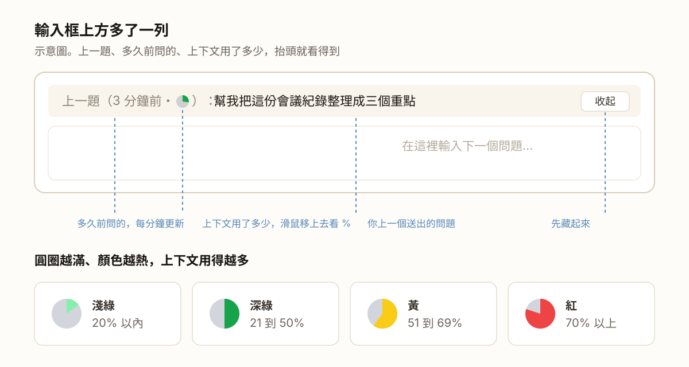
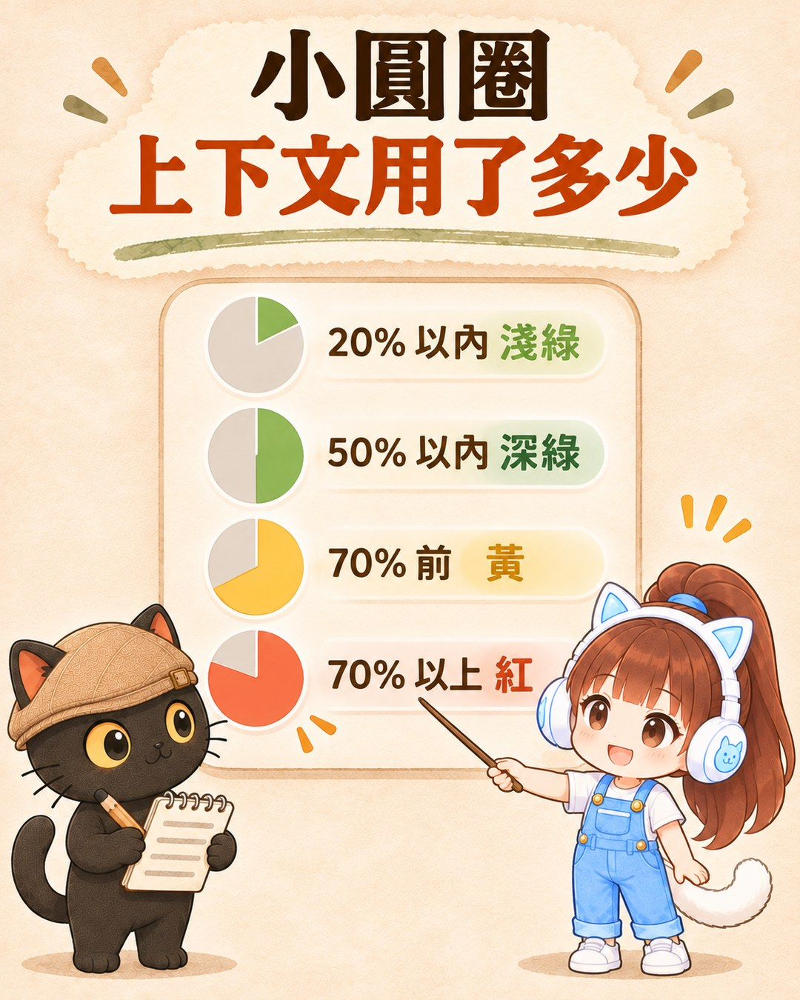

這篇在講什麼
Claude Code Mod 可以照你自己的習慣，改造 Claude Code 的工作畫面。我做的第一個用法很小：在輸入框上方固定顯示一列「上一題」，旁邊有時間和一個會變色的圓圈。這篇講我為什麼需要它、那一列怎麼看、圓圈的四種顏色、Mod 是什麼、怎麼安裝，最後附一段提示詞，讓你請 AI 幫你做自己的 Mod，以及不裝 Mod 也能查上一題和上下文用量的方法。
- 同時開好幾個 AI 對話或任務，切回來常常忘記剛剛問什麼的人
- 用 Claude Code，想知道這個對話的上下文用了多少的人
- 聽過 Claude Code Mod，想知道它能拿來改什麼的人
- 一個免費的 Claude Code Mod，貼一兩行指令就裝好
- 圓圈四種顏色各代表上下文用了多少
- 一段提示詞，請 AI 幫你做自己的 Mod；以及不裝 Mod 也能查的方法

好幾個任務切來切去，回到對話時已經忘了剛剛問什麼
我用 Claude Code 工作時，常常好幾個任務同時在跑。這個在整理會議紀錄，那個在改網頁，另一個在等我決定。AI 在做的時候我就去看別的。
問題出在切回來的那一刻：
要往上捲很久才找得到自己的問題，因為中間夾著 AI 一大段回答和它做的每一個步驟。所以我想要一個不用捲的提示，切回來抬頭就看得到。
上一題提示列顯示什麼：題目、多久前問的、上下文用了多少
裝好之後，每次送出問題，輸入框上方就會出現一列提示：上一題、幾分鐘前問的，後面一個小圓圈。
這一列一直掛在那裡，切回任務時抬頭就看得到，不用往上捲。終端機版長這樣：
| 位置 | 顯示什麼 |
|---|---|
| 上一題 | 你最後送出的問題。換行會併成一行，超過 80 字截斷。斜線指令（例如 /compact）不算。 |
| 多久前問的 | 剛剛、N 分鐘前、N 小時 N 分前，每分鐘更新一次。 |
| 彩色圓圈 | 這個對話的上下文已使用多少。灰色底，從 12 點鐘方向順時針填色，用得越多填得越滿。不顯示數字；在 Claude 桌面 App 裡，滑鼠移到圓圈上會出現「上下文已使用 X%」。上面範例的 ◔ 是終端機版的樣子。 |
| 收起 | 這一題先不顯示，下次送出新問題會再出現。 |
一開始我做的是文字「已使用 27%」。後來改成圓圈，理由是：
圓圈的四種顏色
| 上下文已使用 | 圓圈顏色 |
|---|---|
| 20% 以內（含 20%） | 淺綠 |
| 超過 20%，到 50%（含） | 深綠 |
| 超過 50%，未滿 70% | 黃 |
| 70% 以上（含 70%） | 紅 |

這個數字跟 Claude Code 狀態列、Claude 桌面 App「背景資訊」顯示的是同一個。Claude Code 每回答完一輪會量一次，所以圓圈是每輪更新，不是即時跳動；剛開的對話還沒量到之前，只顯示時間，不顯示圓圈。
終端機畫不了圖，改用 ○◔◑◕● 五個字元表示，顏色規則一樣。
看時間和圓圈，決定要不要先寫工作日誌、壓縮上下文
上一題解決的是「剛剛問什麼」。時間和圓圈放在旁邊，是想再多知道一件事：這個任務跑多久了、用了多少。
上下文快滿時，Claude Code 會自己壓縮，那時候留下什麼由 AI 決定。我習慣在那之前，自己先把做到哪、卡在哪、下一步寫成工作日誌存檔，再壓縮。圓圈讓我不用另外去查，抬頭就知道現在大概在哪個階段。
圓圈只負責顯示，不會幫你寫日誌，也不會自己壓縮。什麼顏色該做什麼，照你自己的工作習慣決定。
- 離開超過一小時回來，AI 對話為什麼變貴？：為什麼要先寫工作日誌再壓縮，以及我另一個 Mod 怎麼在閒置 55 分鐘時自動做這件事。
- Claude Code 打「/」跳出一整排英文指令，到底有啥功能？：
/compact、/context這些指令在做什麼。
Claude Code Mod 是什麼：照自己的習慣改造 AI 的工作畫面
Claude Code 是 Anthropic 出的 AI 工作助理，可以在終端機或 Claude 桌面 App 的 Code 分頁使用，能直接讀寫你電腦上的檔案、幫你做事。如果你只用過 ChatGPT 或 Claude 的網頁聊天，這一段可以先看個大概。
Claude Code Mod 是 Claude Code 外掛裡的一段程式（JavaScript 或 TypeScript），需要 Claude Code 2.1.287 以上的版本。它可以在你送出訊息、AI 回答完、AI 要動用工具這些時間點插手，也可以在畫面上加東西。
我覺得它最好用的地方，是可以照自己的工作習慣去改。像我很容易同時開很多任務，就做一列提示幫自己記上一題。Mod 能改的地方，官方開放的有這些：
| 可以改哪裡 | 舉例 |
|---|---|
| 輸入框上方加一列 | 這篇的上一題提示列 |
| 對話旁邊加一個面板 | 我做的任務佇列，交代的事排在旁邊 |
| 畫面下方的狀態列 | 顯示目前狀態或提醒 |
| 跳出一則小提示 | 某件事做完時提醒你 |
| 新增斜線指令 | 打 / 就能用的自訂指令 |
| 主題配色 | 換整個畫面的顏色 |
| AI 動用工具前先檢查 | 擋下或改寫某些動作，例如個資防護盾先把人名換成代號 |
| 送出的訊息先改過 | 自動幫每則訊息附上補充資料 |
官方說明在 Claude Code Mods 建立教學。
這一列是怎麼做出來的
上一題提示列用到四個 Mod 提供的功能：
- 你送出問題時，記下問題的文字和送出時間。
- 每分鐘更新一次「幾分鐘前」。
- Claude Code 每輪回答完量一次上下文用量，Mod 拿這個數字決定圓圈填多滿、什麼顏色。
- 畫在輸入框上方。Claude 桌面 App 這類可以畫圖的畫面畫圓餅；終端機改用字元。
程式大約 140 行，附兩條自動測試：一條檢查圓圈在桌面 App、手機、VS Code、終端機都畫得出來，以及顏色分界（20、21、50、51、69、70%）各對到正確顏色；另一條檢查還沒量到用量時只顯示時間。其他行為是我在畫面上實際操作確認的。中間有一版我請另一家公司的模型（Google 的 Gemini 4 Neon）交叉審查程式碼，採用了四項修正，例如重開舊對話時時間顯示錯成「剛剛」、超長問題截斷時把表情符號切壞。
- Claude Code Mod 做任務佇列：同樣是 Mod，這個是在對話旁邊加一個面板。
- 個資防護盾：這個 Mod 不加畫面，是在 AI 讀資料之前先把個資換成代號。
下載安裝上一題提示列，終端機與桌面 App 都能用
原始碼公開在 GitHub，免費下載。需要 Claude Code 2.1.287 以上，終端機版與 Claude 桌面 App 的 Code 分頁都能用。
下面兩種裝法擇一，裝好後開一個新對話就看得到。
在 Claude Code 對話框輸入
或在一般終端機（例如 Mac 的「終端機」App）輸入
裝好後開一個新對話，送出第一個問題，輸入框上方就會出現這一列。圓圈要等 AI 回答完第一輪才會出現。
不想用了
免費、MIT 授權（可以自由使用、修改、分享）。原始碼、測試和完整說明都在 GitHub。
請 AI 幫你做自己的 Claude Code Mod：一段提示詞
你不一定要用我的版本。每個人卡住的地方不一樣，可以請 Claude Code 照你的習慣做一個。支援 Mod 的 Claude Code（2.1.287 以上）內建做 Mod 的技能，把需求講清楚，請它幫你起草：
第一次用，建議從「只顯示、不改動任何東西」的小功能開始，像這篇的提示列。會擋下或改寫 AI 動作的 Mod，影響比較大，做好要多測幾次。
上一題提示列的限制與隱私提醒
- 只能用在 Claude Code，而且要 2.1.287 以上。
- 圓圈每輪更新一次：AI 回答到一半時，圓圈還是上一輪量到的數字。
- 只記這個對話的上一題：不會列出更早的問題，也不會跨對話。
- Mod 本身不連網：它只讀你本來就送進這個對話的上一題，不會把文字另外傳到任何地方。
- 分享螢幕前先按「收起」：上一題如果貼了密碼、金鑰或客戶資料，它會一直顯示在輸入框上方。
- Mod 用你自己的權限執行：你電腦上你能打開的檔案、能跑的指令，Mod 理論上也碰得到。來路不明的 Mod 不要裝；這個的原始碼公開，可以先請 AI 幫你讀過再裝。
不裝 Mod，也能查上一題和上下文用了多少
- 上下文用了多少：在 Claude Code 輸入
/context，會列出這個對話的上下文用量。Claude 桌面 App 的「背景資訊」也看得到。 - 上一題：終端機版按鍵盤 ↑，可以叫出之前送出過的訊息。或直接問 AI：「我上一題問了什麼？」
差別在於這些都要你主動去查。我要的是切回來不用想、抬頭就看到，所以才做成一直掛在那裡的一列。
你也想照自己的習慣改造 AI 工作畫面嗎
裝了覺得哪裡不順手，或想做一個自己的 Mod 卡住了，歡迎到 LINE 社群跟我說。
我每月固定舉辦兩場免費線上講座，分享 AI × 知識管理的實戰經驗。